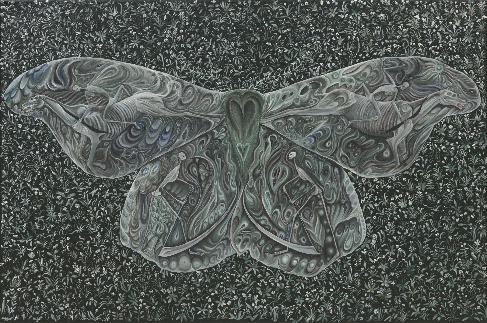

Photography · I
Doug Crocco
Photographer and curator of Death Is a Door. His work treats the photograph as a threshold — an image you don't look at so much as through.
Draft bios — to be confirmed with each artist
Photographer and curator of Death Is a Door. His work treats the photograph as a threshold — an image you don't look at so much as through.

A moving-image project that reworks art-historical images for the present. The Isle of the Dead 2026 sets Böcklin's ferry in motion — a 32-second crossing.

A painter of still life in the vanitas tradition, where flowers stand in for the brevity of a life and the rituals we hold around its end.

Cowan paints small found things — a feather, a stone — next to fragments of the Old Masters, setting everyday objects beside grief as Giotto painted it.
Sellers repaints Northern Renaissance masters — Holbein, Bouts — taking something out or zooming in, so the old images of death and desire come out strange and new.

A painter of faces and masks — the face as the thing we wear, and what's left of a person once it's gone.

Gutierrez paints big, lush pictures where ripeness turns to rot. His bletting fruit sits on the edge between sweet and spoiled.

The late artist L made sculptural "spells" — sealed objects meant to hold feeling, intention and light. The work is shown courtesy of a private collection.

Goering works across painting and optical devices, from camera obscuras to large mystical canvases. Both are about seeing in the dark.

DeLaney's paintings stage the pull between fury and calm — the body that rages and whatever outlasts it.

Radu paints passages and currents. Down the River follows the oldest image of dying: a crossing over water.

Lindeman makes wry objects that borrow the language of spiritual awakening, holding sincerity and satire in the same object.

Curwood's sculpture comes out of contemplative and mystical writing — forms that try to point past symbols to what they stand for.

Chowdhury paints dense, symbolic pictures drawn from myth and devotional art. His moth series turns the insect into a vessel for the soul.